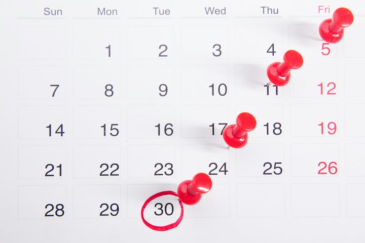
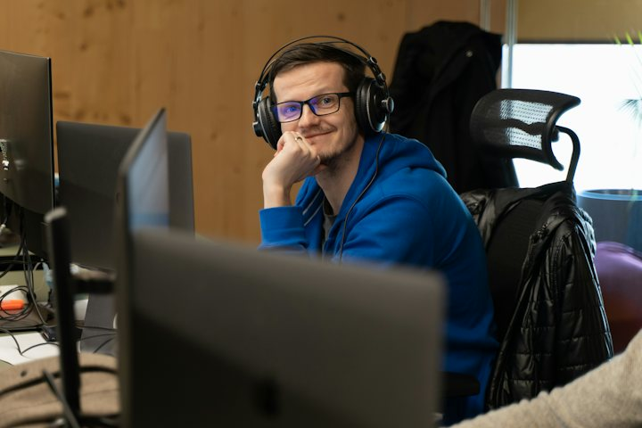

Warm-up · Busy or effective?

Dani
- 9 meetings this week
- 42 messages answered every day
- 1 task finished

Tomás
- 2 meetings this week
- 2 quiet hours every morning
- 4 tasks finished
Who had the better week?
Teacher notes · §1 Warm-up
Pedagógica
- Muestra las dos tarjetas y deja 10 segundos de silencio. Nivel B2: no pre-enseñes vocabulario, escucha qué estructura usan para contrastar.
- Si dicen "Dani is busy but…" no corrijas: haz recast y sigue. La gramática llega en §3.
- Grupo: votan en el chat. 1:1: el alumno vota y tú votas distinto para abrir la discusión. Máximo 4 minutos.
Engagement
- "Todos conocemos a un Dani y a un Tomás." Pregunta: "¿Cuál eres tú esta semana?"
- Cierra con: "Today you learn to say the difference."
Crecimiento
- Anota la frase exacta con la que el grupo contrasta. En §8 la comparas con la versión con but / while.
- Riesgo: Seguro. Temperatura: Mild.
Vocabulary · 12 words to compare people
Tap to flip · listen to the word and the example
0 / 12 flippedThe Impostor Collocation
Caught 0 / 41. Each round has five phrases. One sounds right in Spanish but is NOT natural English. 2. Tap the impostor. 3. Say WHY it is wrong, in English, to win double.
Teacher notes · §2 Vocabulary
Pedagógica
- Voltea cada tarjeta: tú dices la palabra, el alumno repite y da su propio ejemplo antes de leer el de la tarjeta.
- VOC-01 The Impostor Collocation (IMPOSTOR): en cada ronda hay un impostor plausible por traducción literal del español. Punto al que lo caza; doble si explica en inglés por qué suena falso.
- Explicación mínima válida: "In English we say …" o "We don't say …, we say …". No aceptes solo "it is wrong".
- Límite: 100 palabras de lectura máximo por tarjeta. Aquí cada ronda tiene 5 frases cortas.
Engagement
- "Tu cerebro traduce. Hoy lo atrapas." Cada impostor atrapado se declara en voz alta.
- Cierra: "I caught __ impostors out of four."
Crecimiento
- Las 12 palabras reaparecen en Grammar, Listening (≥3) y Mission. Retoma waste time y get things done al inicio de S3.
- Si el alumno cae en 'make a result' o 'do multitasking', anótalo para el Correction Bounty de §8.
Grammar · Contrast: but · while · The difference is
Read the chat. Which words show the contrast?

Dani answers every message, but the report is late.
And Tomás?
He has two meetings, while Dani has nine.
The difference is the result.
One contrast, three ways to say it
1 · Opposite ideas
Dani is busy, but she is not effective.
2 · Two people or things
Tomás has two meetings, while Dani has nine.
3 · The key point
The difference is the result, not the hours.
| Statement, negative, question | Notice | |
|---|---|---|
| + | Dani answers every message, but she finishes few tasks. | A comma goes before but and while. |
| − | Tomás doesn't answer fast, but he gets things done. | The negative can be on either side of the contrast. |
| ? | What is the difference? The difference is the result. | Ask with "What is the difference?" and answer with "The difference is…". |
Today you only contrast two people or two ideas. Comparing options (more practical than…) comes in Block 2.
¿Qué es? Tres formas de contrastar: but junta dos ideas opuestas, while contrasta dos personas o cosas, y The difference is… señala el punto clave.
¿Cómo se usa? Dani is busy, but she is not effective. Tomás has two meetings, while Dani has nine. The difference is the result.
¿Para qué hoy? Para decir en qué se distingue una persona ocupada de una persona efectiva, en lugar de "they are different".
Cuidado: en español decimos "aunque… pero". En inglés se usa uno solo: Because Dani is busy, but she is slow.
Choose: but · while · because
Sentence Auction
Bank 100Lots 0 / 81. You have 100 points. Each lot is a sentence. 2. Set your bid (10 to 30). BUY only the correct ones. 3. A correct buy pays you your bid. A wrong buy costs DOUBLE. Say the repair out loud.
Say three sentences about two people you know
Mistakes at this level
Teacher notes · §3 Grammar
Pedagógica
- Un solo punto de lengua: contraste con but / while / The difference is. Explicación continua ≤5 min; el botón en español está oculto por defecto.
- Practice A es mecánica (≤1/3 del bloque). GRM-03 Sentence Auction (SUBASTA, mecánica → meaningful): compra solo las correctas, comprar una mala cuesta el doble. Después de cada lote el alumno dice la oración correcta en voz alta.
- Error prioritario: Because… but… y but also. Márcalos en voz alta cada vez.
- Límite de nivel: sin comparativos (más… que) ni hipótesis; eso llega en Block 2 y 4.
Engagement
- "You already contrast in Spanish with aunque… pero. Today you pick one word."
- Cierra: "My final bank is __ points."
Crecimiento
- Reaparece en Listening (but ×4, while ×2), Speaking y Mission.
- S3 reutiliza but/while para dividir tareas; S4 los integra con because / so / That's why.
Listening · One quiet hour

A manager, Hannah, calls Rafael to review last week. Two people worked hard. Only one finished the work.
First bet. Then listen. Then check.
Practice audio (browser voices). Final audio: record with ElevenLabs.
Predict and Score: bet 1 to 3 points on each statement
Score 0What is the call about?
Listen again for the details
The call
Hannah · UK English · female · natural pace | Rafael · Brazilian-accented English · male · natural paceListen · repeat · record your best
Teacher notes · §4 Listening
Pedagógica
- LIS-05 Predict and Score (APUESTA): antes de escuchar, apuestan 1–3 puntos por afirmación a partir del escenario. Luego escuchan y comparan. Punto extra si explican por qué falló una predicción.
- Primera escucha: tarea global. Segunda: detalles. El guion se muestra solo al final.
- Guion: 205 palabras (B2: 180–300), 2 hablantes. Contiene but ×4, while ×2, The difference is ×1 y 4 palabras del léxico (busy, multitask, waste time, interruption, get things done, focus, results).
- Para grabar: Hannah = inglés británico, mujer, ritmo natural · Rafael = inglés con acento brasileño, hombre, ritmo natural. Cumple la regla de acento no nativo (1 de cada 3 guiones).
- Answer key. Predicciones: (1) Dani finished four tasks and Tomás finished one → False (Dani 1, Tomás 4). (2) Dani's phone interrupts her work → True. (3) Rafael wants a quiet hour for the whole team → True. Global: why one person is busy and another effective. Detalles: nine meetings · turns off notifications for two hours · one quiet hour for the whole team · a plan by Friday.
Engagement
- "Who do you believe, the one who answers 40 messages or the one who finishes 4 tasks?"
- Anota cuántos predijeron las 3 afirmaciones.
Crecimiento
- "In the mission you decide who is busy and who is effective, and you say the difference."
Speaking · Defend the position you drew
1. Draw a slip. You do NOT choose your position. 2. Prepare 30 seconds in silence, then defend it for 60 seconds. 3. Your partner answers with ONE objection. You answer back.
Defend it for 60 seconds
Tap what you did. Points come from producing English, not from speed.
12 questions · always 2 follow-ups
Teacher notes · §5 Speaking
Pedagógica
- SPK-03 Devil's Advocate Draw (ROL OCULTO): el alumno saca una postura que NO eligió. Mata el "I agree" automático. Punto por defender bien una postura que no es la suya.
- 30 segundos de preparación en silencio y después produce sin notas (regla B2). El compañero responde con UNA objeción usando but.
- Grupo: parejas en breakout, 3 papelitos en total (rota). 1:1: tú también sacas postura contraria y la defiendes.
- Anota 2 aciertos y 3 errores repetidos (Because… but…) para §8. Entre rondas usa las 12 preguntas: nunca aceptes respuesta de una palabra.
Engagement
- Cierra en voz alta: "I defended a position I did not choose, and my best reason was __."
- "Defending the opposite idea is the fastest way to find your own."
Crecimiento
- Puntaje: se gana por producir lengua, nunca por contestar rápido.
- Riesgo: Seguro (posturas generales, nadie queda expuesto frente a un jefe).
Mission · The Weekly Review
The Weekly Review
You are the team manager. Three weekly reports are on your desk. For each one, say who is busy and who is effective, why, and the main problem.
Group: each report goes to one student in a breakout room. Your partner asks one question per report. Rotate every 3 minutes.
1:1: you brief the teacher after each report. The teacher asks "Why?" once per report.
Success: 3 reports, each with the situation, evidence with because, a contrast with but or while, and the main problem or the difference.
Teacher notes · §6 Mission
Pedagógica
- Marca cada movimiento solo cuando el alumno lo dice sin leer la tarjeta.
- Evidencia observable: situación (busy / effective), evidencia con because, contraste con but o while, problema principal o The difference is…. Se registra en el portal.
- No interrumpas: el feedback va en §7. Tarjetas ficticias, máximo 100 palabras (tope B2).
Engagement
- Anuncia en voz alta: "__ of 12 moves. Mission complete!"
Crecimiento
- "In Session 3 you divide the work: who is responsible for what."
- Conecta con la tarea final: priorizar y recomendar con una razón.
Wrap-up · Better the second time
✓ Success
↑ Upgrade
✎ Repair
↻ 2nd try
Repeat one briefing with the teacher. Use the upgrades. Same task, better English.
60 seconds · 5 questions
My second try is better because…
You can say the difference between busy and effective.
Homework: write 5 sentences comparing two people (a coworker, a family member, a friend). Use but, while and The difference is at least once each. Next: Session 3.
Teacher notes · §7 Wrap-up
Pedagógica
- Máximo 2 aciertos y 3 correcciones de alto valor, anónimas. Luego segundo intento de un reporte contigo.
- Exit quiz en voz alta: el alumno dice la respuesta antes del clic.
Engagement
- Compara con la frase que anotaste en §1: "Minute 1: a guess. Minute 58: a clear contrast."
Crecimiento
- Registra: checklist de la misión, puntos del Auction, impostores atrapados y puntos de la postura.